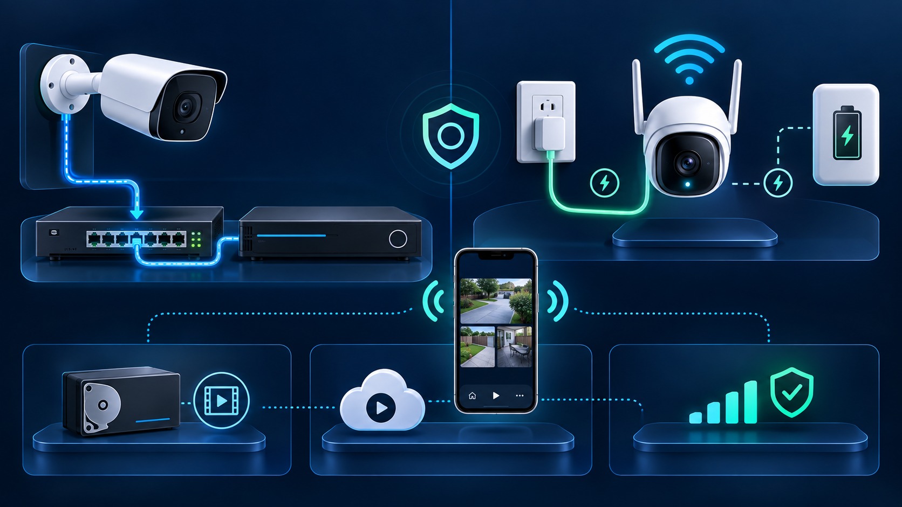

“Wired or wireless?” sounds like one choice, but a security camera system has four separate parts: how each camera gets power, how video travels, where footage is recorded, and how you view it remotely. Treating those as separate decisions leads to a system that fits the property instead of a label on a box.
A wired camera can still provide phone access. A Wi-Fi camera may still need a power cable. Either type may record locally, to the cloud, or both. This guide explains those differences for Los Angeles homes and businesses without assuming one design fits every building.
Power is the first question to settle. A PoE camera normally uses one network cable for both power and data. Axis includes the benefits of Power over Ethernet in its official network-technology training. The camera, switch, recorder, and backup-power plan still need compatible specifications.
A Wi-Fi camera can be powered from an outlet or a battery. Plug-in models avoid battery charging but still need a safe route to power. Battery models can be easier to place, yet they may use motion-triggered recording to conserve power. Reolink's official guidance says most of its battery-powered cameras do not support continuous recording, while specified models are exceptions. Check the exact model instead of assuming every battery camera records the same way.
A wired IP camera sends video over Ethernet to the network or recorder. Its connection does not compete for Wi-Fi airtime, although the switch, cable, connectors, and recorder must all be installed correctly. A damaged cable or insufficient PoE power can still cause outages.
A wireless camera depends on the Wi-Fi signal at the final mounting position. Distance is only one factor: walls, metal, nearby networks, access-point placement, and congestion can change performance. Test the intended location with doors closed and during normal business or household activity. A phone showing Wi-Fi bars is useful context, but it does not prove that a camera can upload its selected resolution reliably around the clock.
Wired does not automatically mean local recording, and wireless does not automatically mean cloud-only recording. Depending on the products, footage may be stored on a DVR or NVR, a memory card in the camera, a local server, a cloud service, or a combination.
If cameras and recorders come from different manufacturers, verify compatibility by exact model and firmware. ONVIF explains that interoperability comes from matching conformant device and client profiles; a vague “supports ONVIF” statement is not enough. Its profile guidance also notes that a network camera with local storage can support both video streaming and recording-related profiles.
Ask what happens during an internet outage, a local power outage, or a recorder failure. The answer depends on the actual storage design. Our cloud-versus-local storage guide explains the trade-offs, and our recorder troubleshooting guide shows how live view and saved footage can fail independently.
Remote viewing is an account, network, and system feature rather than a definition of wireless cameras. A PoE system connected to the property's network can offer app access and notifications. A Wi-Fi camera can do the same. Confirm which account owns the system, whether multi-user access is available, how two-factor authentication works, and whether any desired cloud features require a subscription.
Avoid exposing a recorder directly to the internet through improvised port-forwarding settings. Use the manufacturer's supported remote-access method, keep administrator access limited, and install security updates appropriate for the equipment.
Building construction often decides more than the camera label. An accessible attic, crawlspace, utility room, or conduit path can make permanent cabling straightforward. Finished ceilings, concrete, historic surfaces, shared walls, detached structures, or landlord restrictions may call for a different plan.
Ask installers to describe the complete system, not only the number of cameras:
For permanent entrances, parking areas, registers, and other views that need predictable recording, a professionally planned wired system is often the stronger starting point. Plug-in Wi-Fi cameras can solve locations where running data cable is impractical but reliable power and Wi-Fi are available. Battery cameras can suit lower-activity or temporary locations when their maintenance and recording limits are acceptable.
A hybrid design can be sensible, but only when the cameras, network, recording, app access, and maintenance plan still form one manageable system. Tech Secure 360 installs, repairs, and upgrades wired, wireless, and hybrid camera systems across Greater Los Angeles. Call or text (747) 336-2737 or request a free estimate to compare options for your property.
Tell us about your place and we'll respond within one business day with a tailored plan and pricing. Or call us right now.
Your request is in. A Tech Secure 360 specialist will reach out within one business day. Need help now? Call (747) 336-2737.